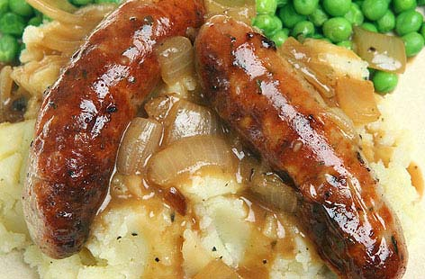

Sausage Mash Gravy

Sausage mash and gravy in all it's glory
Sausage mash and gravy is just one of those meals that you can just keep eating and eating... Yum!!
With only a few ingredients you are sure to have in your home you will be able to cook up a storm for the whole family.
Ingredients
- Some lovely spuds
- Salted Butter
- Sausages (Veggie or Meat)
- Gravy Granules
- Sea Salt
- White Onions (optional)
- Brown Sugar (optional)
Let's Get Cooking
-
Cut the spuds into nice 1" cubes (personally I prefer skin-on so I will omit pealing the spuds), and chuck them into some boiling water for 10 mins or until nice and soft.
-
(Optional step)
Splash of olive oil, sliced white onion, good pinch of sugar. Let fry on a low heat while you wait on the spuds/sausages.
-
Get the sausages cooking in the oven with a nice drizzling of olive oil.
-
Once your spuds are nice and soft its time to drain, add a good huck of butter, crack of salt and get mashing till silky smooth. (Add more butter/salt to preference) (Add half the caramelized onions if you decided to fry some up)
-
Whack some boiling water in with your gravy granules to get a nice thick gravy (If you decided to caramelize those onions nows the time to add half to the gravy)
Presentation
- Big dollop of mash
- Three sausages sticking out of mash
- Swamp plate with gravy
- Crack of sea salt to finish